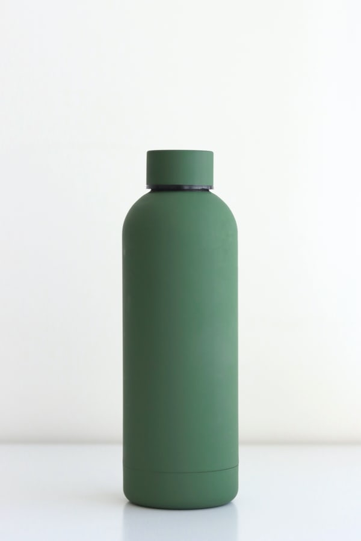
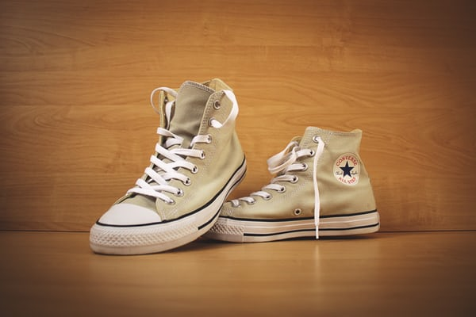
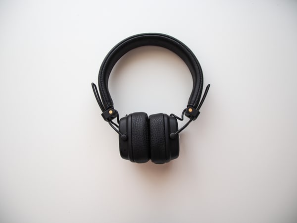

Test Image - 
Output on Goggle Lens -
Bottle
Output on Mobilenet -
Water Bottle
Result -
Mobilenet Is More Accurate
Test Image - 
Output on Goggle lens -
Boots
Output on Mobilenet Model -
Shoes
Result -
Mobilene Is More Accurate
Test Image - 
Output on Goggle lens -
Headphone
Output on Mobilenet -
Microphone, Mike
Result -
Mobilenet Is More Accurate
Test Image -
Output on Goggle lens -
Bird
Output on Mobilenet -
parrot
Result -
Goggle lens Is More Accurate
Test Image -
Output on Microsoft Azure -
Infant bed
Output on Mobilenet -
bathtub, bathing tub, bath, tub
Result -
Goggle lens Is More Accurate